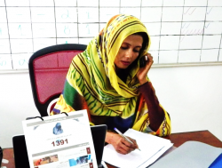

In Darfur, improving lives one phone call at a time
.jpg "Nabaelhanan Sadig, the call centre's referral officer informing internally displaced people at a water point in Al Salam camp, North Darfur, about the purpose of the hotline. Photo: OCHA - August 2015.")
“One time, at midnight, I received a call from a woman. She sounded very worried. Torrential rains had destroyed her shelter and the latrines, her food and her belongings. She was desperate. I asked her if any other houses had been destroyed, and she told me there were approximately 150 families who had been affected. I immediately sent the information to the humanitarian sector leads and the respective OCHA office. The very next day, a needs assessment was carried out and within just two days, people received emergency shelters, household items, and food. In just two days! It used to take agencies three or four weeks to respond to this kind of thing.”
Nabaelhanan Sadig, 39, is from Khartoum, the capital, and for the past two years she has been answering calls at the OCHA-run hotline for internally displaced people (IDPs) in the Darfur region of Sudan.
Before becoming the call centre’s referral officer, she worked directly in camps for various national NGOs. “I used to get so frustrated when I worked in the field, seeing all the gaps that needed to be filled, and with no good system to make it happen fast,” she said.
This is what the call centre, launched in the summer of 2013 in West Darfur, intended to solve.
Improving services and accountability
In 2013, in the tenth year of the humanitarian response in Darfur, partners observed worrying gaps in basic services in camps in the region. In an effort to remedy that and to increase accountability to the conflict-affected people, humanitarian partners agreed that OCHA would pilot a call centre to empower displaced communities to report issues such as broken water pumps, closed schools or non-functioning health facilities in real-time. It is run in collaboration with other aid groups and with the agreement of the Sudanese Government.

“We used to travel a long distance to El Fasher town to inform sector leads about an existing gap. Now…the distance has been bridged by the hotline and that has saved our time, money and efforts,”said Sheikh Abdul Rahman Ibrahim, who lives in North Darfur’s El Sireaf IDP camp.
Two years after its launch, the programme has received more than 1,000 phone calls, facilitating concrete and tangible improvements in IDP camps throughout Darfur, home to over 2.6 million people.
“It’s a great feeling to be able to communicate directly with the community, and listening to their complaints, being able to help improve their lives every day,” said Nabaelhanan, whom everyone calls ‘Hanan’.
Call centres are increasingly included in humanitarian response efforts worldwide. Initially serving mainly as feedback mechanisms, they are at last turning into hubs to improve the effectiveness and responsiveness of humanitarian action.
Closing the gap
Here is how it works: when a water pump breaks, any camp resident can report it by dialing 1391, a number that can be accessed from all three of Sudan’s network operators. Each call is logged by Hanan, who immediately notifies the agency leading the sector of the reported gap. A physical and visual verification of the gap is then conducted by the relevant sector lead that is responsible for undertaking the required actions. After a week or so, Hanan keeps close communication with the community and with the relevant agencies to ensure that pending issues remain on the radar and don’t fall through the cracks.
In the first months after the Darfur call centre was set up, just one third of reported gaps were addressed. As of May, the rate had climbed to 77 per cent – the result of an elaborate follow-up system to ensure that no reported gap is ignored.
“Sometimes, if a gap hasn’t been fixed or when there is conflicting information, people [in the camps] get angry at me when I call them to follow-up. They say ‘why don’t you talk to the agencies? They’re the ones you need to call!’” said Hanan. “But they often call back later to apologize. They understand we’re only trying to help.”

On average, once reported, gaps can take anywhere from one day to a few weeks to get fixed. “We have one gap that has remained unaddressed for close to two years, but it is very rare. We are putting a lot of efforts into reducing the number of ‘pending gaps’,” said Hanan.
So far, the majority of the calls received concerned water and sanitation issues (39 per cent), followed by non-food items requests (38 per cent), health matters (11 per cent), education (4 per cent), food and nutrition services (4 per cent) and veterinary (2 per cent). As the Hotline is concentrating on the delivery of basic services in IDP camps, protection issues – such as gender-based violence or displacement – don’t fall under the call centre’s mandate.
Strengthening communication and trust
Since the call centre was launched, aid groups have conducted numerous awareness campaigns through videos, leaflets, posters, live demonstrations and info sessions in schools and clinics, to encourage everyone who needs to – be it a young girl or a community elder – to pick up the phone and voice their concerns. Many displaced people, however, still prefer to rely on their leaders or their sheiks to convey the issues they face. But the hotline is empowering these community leaders once again, said Hanan. “The great thing about this is that it is a way to… make them feel like they’re really contributing to the well-being of their people,” she told OCHA.
“We’ve also noticed that whenever a gap was reported as new or pending, it was always reliable information. This has strengthened the relationship between the agencies and the beneficiaries, improving communication and trust.”

{kind=link}